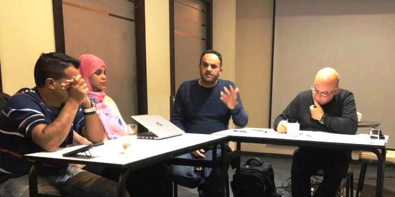
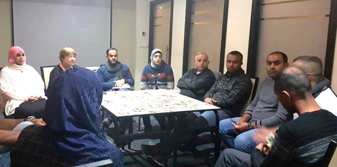
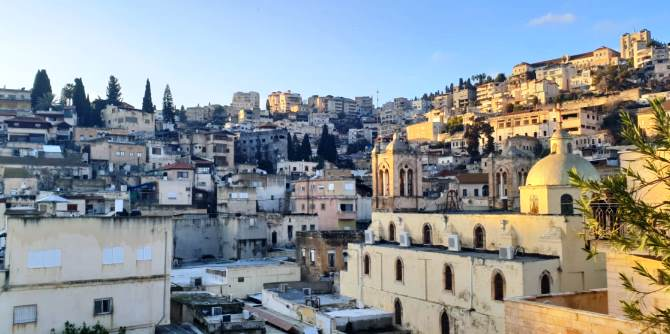

As part of a two-day retreat that took place in late December, fellows of the Mandel Program for Regional Leadership in Kseifa and Arara BaNegev visited the Kfar Kama Regional Council and the city of Nazareth to explore different aspects of civil society in Israel.
The first day of the retreat focused on the study of non-institutionalized civil society as it is found among the Circassian minority in the town of Kfar Kama in the lower Galilee. There, Zakaria Nafso, head of the local council, met with the fellows and told them about the culture of civil society among Israel’s traditional Circassian community, which is characterized by community resilience and social solidarity.

On the second day of the retreat, the fellows learned about the development of civil society in the city of Nazareth and about the diverse civil society activities that take place there. The fellows participated in a session entitled “Different Forms: Milestones in the Development of Civil Society in Arab Society." Moderated by Muhammad Zidan, an expert on civil society, the session included a panel of social entrepreneurs who described their experiences in institutionalizing civil engagement in a variety of fields. The panelists who participated in this session were Muhammad Bittar, executive director of the Nazareth Cinematheque; Fidaa Tabuni, founder of a project promoting sports and a healthy lifestyle for women; Atef Moadi, chair of the monitoring committee for Arab education; Louie Asfour, entrepreneur and founder of Sanbada, a sustainable social action organization; and Muhammad Kiel, founder of "Community Power: Local Community Committees."

The retreat gave the fellows the opportunity to expand their knowledge of issues related to civil society, as a basis for efforts to develop the role of civil society among the Bedouin Arab population of the Negev. Their learning can be summed up with the words of Professor Amal Jamal, in his book Arab Civil Society in Israel: New Elites, Social Capital and Challenging Power Structures: "Civil society has organizational, ethical, communicative, and narrative performances. Combining them enables the expression of the control that citizens have over much of what happens in their lives. The existence of this kind of active civic space – which is made up of voluntary organizations, institutionalized civic associations, and non-institutionalized social or grassroots movements – is, therefore, an important tool for pitting social power against market forces, which are seeking increasingly more control, and against the state's authority, which constantly seeks to expand both its dominating and coercive sovereignty.”

{kind=link}
{kind=link}
{kind=link}